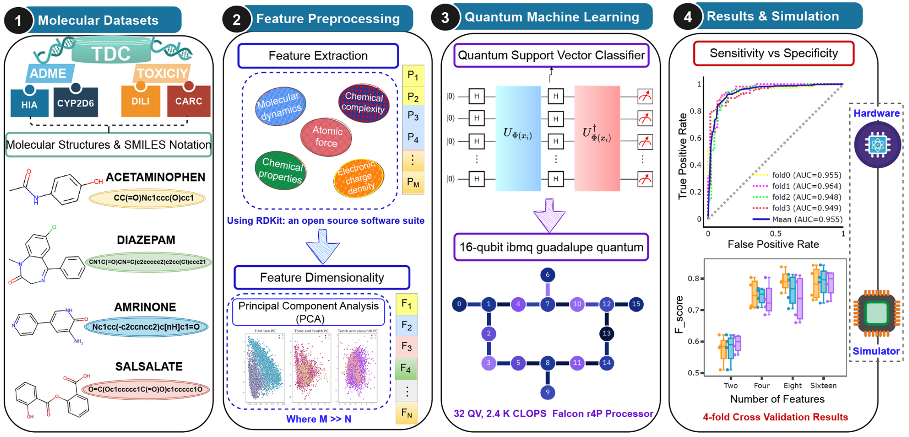
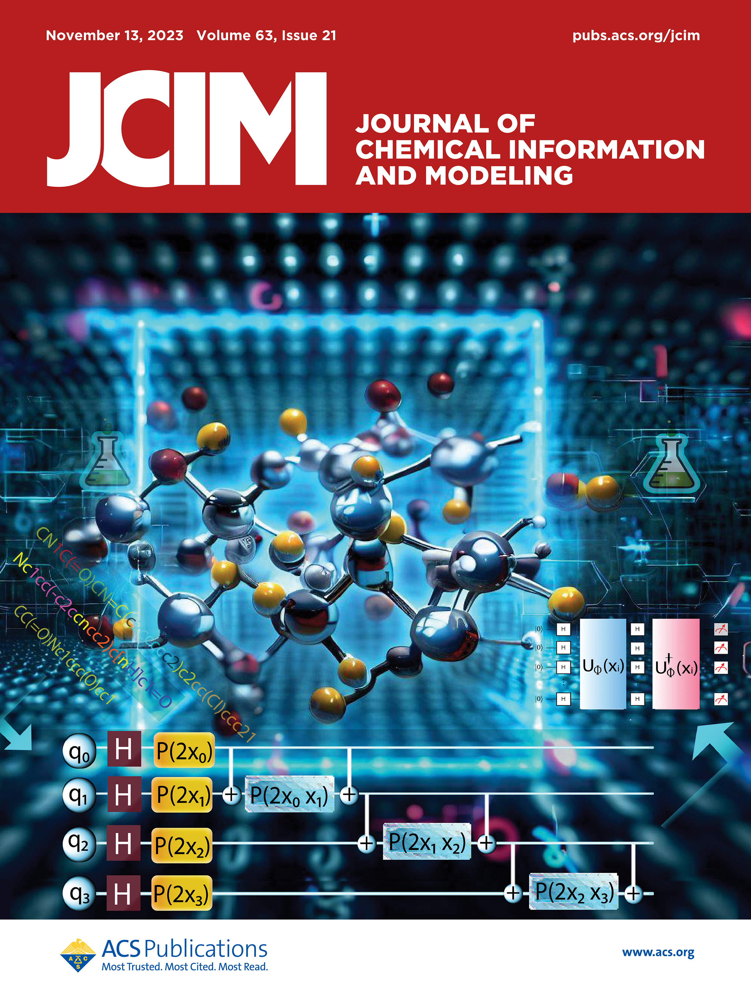

Sabre Kais Group
Quantum Information and Quantum Computation
Quantum Machine Learning Predicting ADME-Tox Properties in Drug Discovery

In the drug discovery paradigm, the evaluation of absorption, distribution, metabolism, and excretion (ADME) and
toxicity properties of new chemical entities are one of the most critical issues, which is a time-consuming process, immensely expensive, and poses formidable challenges in pharmaceutical R&D. In recent years, emerging technologies like artificial intelligence (AI), big data, and cloud technologies have garnered great attention to predict the ADME and toxicity of molecules. Currently, the blend of quantum computation and machine learning has attracted considerable attention in almost every field ranging from chemistry to biomedicine and several engineering disciplines as well. Quantum computers have the potential to bring advances in high-throughput experimental techniques and in screening billions of molecules by reducing development costs and time associated with the drug discovery process. Motivated by the efficiency of quantum kernel methods, we proposed a quantum machine learning (QML) framework consisting of a classical support vector classifier algorithm with a kernel-based quantum classifier. To demonstrate the feasibility of the proposed QML framework, the simplified molecular input line entry system (SMILES) notation-based string kernel, combined with a quantum support vector classifier, is used for the evaluation of chemical/drug ADME-Tox properties. The proposed quantum machine learning framework is validated and assessed via large-scale simulations. Based on our results from numerical simulations, the quantum model achieved the best performance as compared to classical counterparts in terms of the area under the curve of the receiver operating characteristic curve (AUC ROC; 0.80−0.95) for predicting outcomes on ADME-Tox data sets for small molecules, with a different number of features. The deployment of the proposed framework in the pharmaceutical industry would be extremely valuable in making the best decisions possible.
Quantum Machine Learning Predicting ADME-Tox Properties in
Drug Discovery
Amandeep Singh Bhatia, Mandeep Kaur Saggi, and Sabre Kais
Journal of Chemical Information and Modeling 2023, 63, 21, 6476-6486 Article PDF
